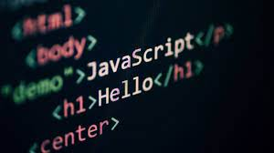

Web development refers in general to the tasks associated with developing websites for hosting via
intranet or internet. The web development process includes web design,
web content development,
client-side/server-side scripting and network security configuration, among other tasks.
In a broader sense, web development encompasses all the actions, updates, and operations required to
build, maintain and manage a website to ensure its performance, user experience, and speed are optimal.
It might also, but not necessarily, include all those strategic actions needed to ensure its proper ranking
on search engine results. Usually, those tasks pertain to a different specialization, namely search engine optimization (SEO)
Web development is the coding or programming that enables website functionality, per the owner's requirements. It mainly deals with the non-design aspect of building websites, which includes coding and writing markup. Web development ranges from creating plain text pages to complex web-based applications, social network applications and electronic business applications.
Most web devs use Hypertext Markup Language (HTML), Cascading Style Sheets (CSS), and JavaScript to develop websites.
HTML: defines the basic framework of a website – the foundation upon which everything else is built upon. It forms the blocks that define a page’s layout, format, and critical components. Although it is theoretically possible to code a website on HTML only, it will be just a barebone site with no functions unless it’s enriched with CSS and JavaScript. Also, even simple style modifications such as changing the color of a button require a lot of coding to be executed using HTML only.
CSS: is used to style the content of a website using a small set of files that are kept across the entire site. This way, whenever a change must be applied to say, consistently change the color of all the buttons found in every page of the website, a web dev needs to edit only a single file in CSS.

JavaScript: programming language is used to take care of the interactivity of many unique website elements. It can be used to create effects that alter the appearance of icons and drop-down menus, add animations, games, and other interactive elements.
Web developers are usually divided into front-end devs, back-end devs, and full-stack devs. A front-end dev takes care of all the visual aspects of the website (layout, navigation bar, etc.), its interactivity, and binds together all its elements
| S.NO | Language | Abbreviation | |
|---|---|---|---|
| 1 | HTML | Hyper Text Markup language | |
| 2 | CSS | Cascading Style Sheets | |
| 3 | JS | JavaScript | |
Back-end devs take care of less visible tasks that ensure the website runs smoothly, such as managing the website’s hosting services, database, and applications. Back-end devs might need to engineer solution to server issues by using additional server-side languages such as Python, Ruby, Java, and PHP.
Full-stack devs are developers able to do both front-end and back-end tasks at the same time.